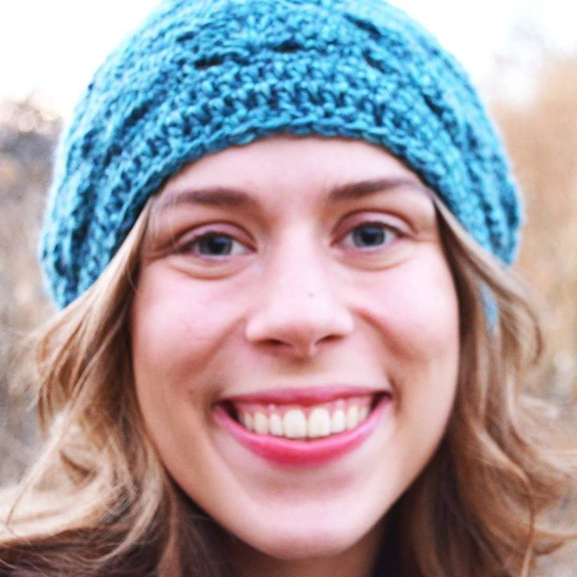

Hello! My name is Danielle Roth. I am a student in the Visual Communications Design program at Eastern Washington University. I am a senior in the design program at Eastern, and have been privileged to study in this field. Design is something I am passionate about, and look forward to continuing to developing in professionally and personally. For work, I have had the privilege of being employed at the Running Start office on the EWU campus for almost one year. Right now I am still working on completing my education, however, I am interested in possibly doing some volunteer design work to help build my portfolio. I was born and raised in Spokane, WA and love the Northwest. I am passionate about creativity, innovation, and professionalism in design.
Working in the Running Start office has been a growing and encouraging experience. I have been privileged to be able to work on various projects creating marketing and information material for the program. This has let me develop with catering design work to specific audience and message needs, while learning to communicate clearly with different supervising teams. Currently, I volunteer twice a month with a local church, Cheney Community Church, to provide technical support and visual slide presentations for the weekly Sunday services. I have volunteered steadily in this capacity for the previous two and half years. This has been a great opportunity to develop in communicating with a whole team of people, with specific regards to scheduling, technical support, content changes/needs, and design.
